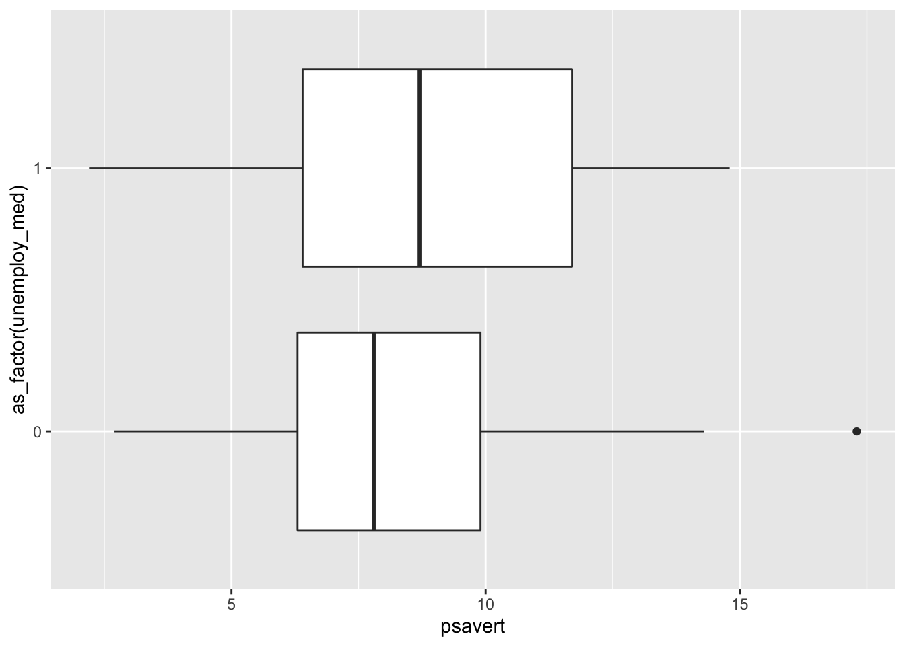
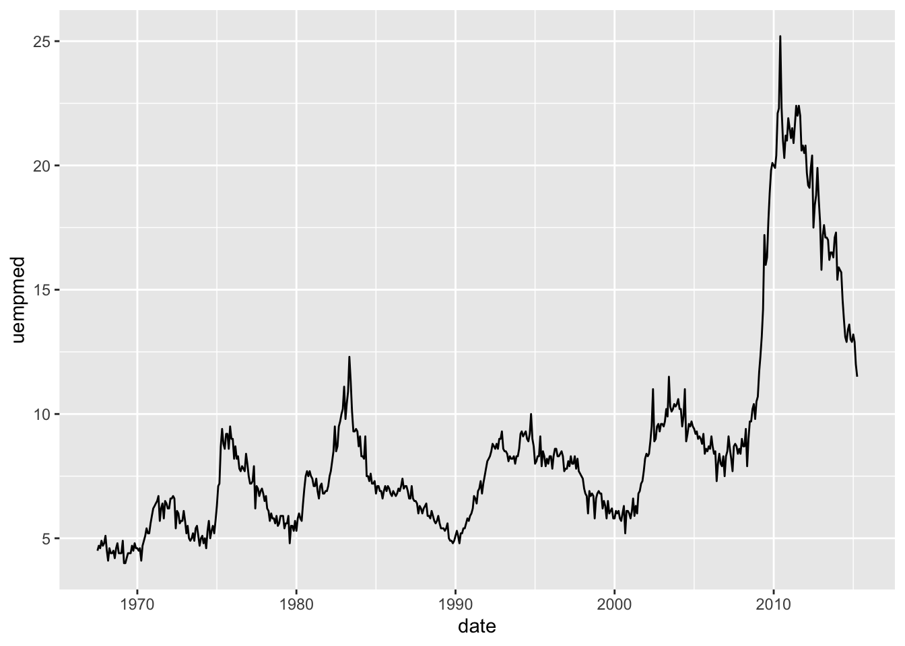
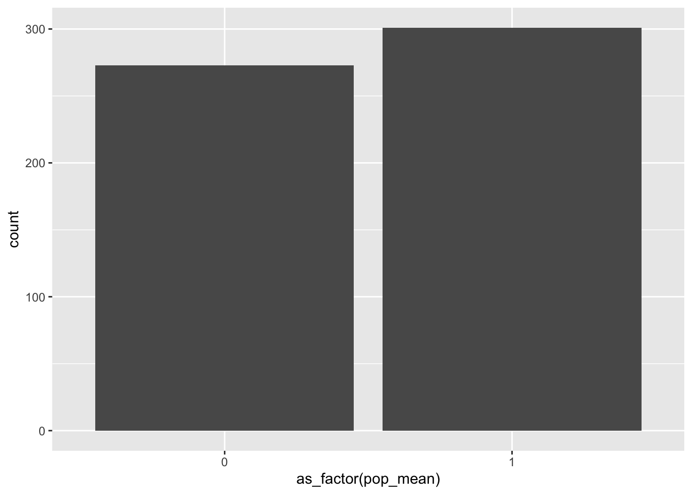

9 Data Visualization and ggplot2
In this chapter:
Applying skills from
tidyverseto visualizing data in RDefining the type of graph desired via
geom_functionsPlaying around with
ggthemesand other graphical specificationsSome suggestions and conventions for data visualization (i.e. Dos and Don’ts)
9.1 ggplot2
In Chapter (@ch8) we talked about the suite of packages that compose the tidyverse. Remember mention of ggplot2? A visualization package so good that we don’t even bother teaching people how to visualize data in base R anymore? Well, in case you missed mention of this fabulous package, fear not. In this chapter we will cover the basics of ggplot2.
We won’t go into the underlying philosophy of ggplot2 here and the Grammar of Graphics. But if you are interested in more of this Hadley Wickham’s free online text ggplot2: Elegant Graphics for Data Analysis goes into further details on these points. The book also goes into more detail than we can here on more specialized graph types and specifications. As you move forward, this will be a good resource to revisit.
More than just discovering the landscape of ggplot2, this chapter also contains some key takeaways about visualizing data in general. So, even if you prefer base R, matplotlib in Python, or just want to be a careful critic of data visualization in popular publications, this chapter will have good insight regarding what does and does not constitute good data viz practice.
Based on our work in the previous chapter, you have already downloaded ggplot2 package. Some others that will be useful for this tutorial are ggrepel, ggthemes, ggtext, and scales. When you get a chance, install those. In the case that your code does not work later on, a missed install on one of these packages might be why. Piping and control over the verbiage from dplyr are pretty necessary to have a good command of ggplot2. So, if you are feeling unsure about those skills, revisit the sections on those items and practice with some more test data.
# install all the recommended packages at once
install.packages(c("ggrepel", "ggthemes", "ggtext", "scales"))9.2 The first step of visualizing data: KNOW THE DATA
This chapter will be largely be an applied walk-through tutorial. Therefore, it is written as if you are working along with the text. While you can just easily copy and paste the code from the text to your R script, you will likely benefit from developing the memory around how to compose a plot code, so try to type the code as we go along.
Let’s start out by simply just loading in the tidyverse package, which loads in ggplot2. The data that we will use for this chapter are already loaded in with the package. We will first take a look at the msleep data. This is a dataset that details the sleep behaviors of various mammals gathered by Savage and West (2007). Let’s first get acquainted with the dataset and what kinds of variables we will be handling. Note that as long as you have loaded in ggplot2 or tidyverse via the library() call, you will not have to do anything else to import data.
First, we can just check the dimensions of the data with dim(msleep). Here we will see that there are 83 rows of data over 11 columns. This means that there are 83 observations for each of the 11 columns. We can also run tibble(msleep) to see a snippet of the data. Alternatively, you can check out the glimpse() function to see all of the column names. The variable names lead us to believe that the dataset contains a number of identifying traits of each mammal in the data, their sleep and waking patterns, and some other physical information. As we talked about before, codebooks are necessary to understand how data are measured and how to interpret different values. To access the codebook for this dataset you can access the help file via the call ?msleep.
## ── Attaching packages ─────────────────────────────────────── tidyverse 1.3.2 ──
## ✔ ggplot2 3.3.6 ✔ purrr 0.3.4
## ✔ tibble 3.1.8 ✔ dplyr 1.0.9
## ✔ tidyr 1.2.0 ✔ stringr 1.4.0
## ✔ readr 2.1.2 ✔ forcats 0.5.1
## ── Conflicts ────────────────────────────────────────── tidyverse_conflicts() ──
## ✖ dplyr::filter() masks stats::filter()
## ✖ dplyr::lag() masks stats::lag()
dim(msleep)## [1] 83 11
tibble(msleep)## # A tibble: 83 × 11
## name genus vore order conse…¹ sleep…² sleep…³ sleep…⁴ awake brainwt
## <chr> <chr> <chr> <chr> <chr> <dbl> <dbl> <dbl> <dbl> <dbl>
## 1 Cheetah Acin… carni Carn… lc 12.1 NA NA 11.9 NA
## 2 Owl monkey Aotus omni Prim… <NA> 17 1.8 NA 7 0.0155
## 3 Mountain be… Aplo… herbi Rode… nt 14.4 2.4 NA 9.6 NA
## 4 Greater sho… Blar… omni Sori… lc 14.9 2.3 0.133 9.1 0.00029
## 5 Cow Bos herbi Arti… domest… 4 0.7 0.667 20 0.423
## 6 Three-toed … Brad… herbi Pilo… <NA> 14.4 2.2 0.767 9.6 NA
## 7 Northern fu… Call… carni Carn… vu 8.7 1.4 0.383 15.3 NA
## 8 Vesper mouse Calo… <NA> Rode… <NA> 7 NA NA 17 NA
## 9 Dog Canis carni Carn… domest… 10.1 2.9 0.333 13.9 0.07
## 10 Roe deer Capr… herbi Arti… lc 3 NA NA 21 0.0982
## # … with 73 more rows, 1 more variable: bodywt <dbl>, and abbreviated variable
## # names ¹conservation, ²sleep_total, ³sleep_rem, ⁴sleep_cycle
## # ℹ Use `print(n = ...)` to see more rows, and `colnames()` to see all variable names
glimpse(msleep)## Rows: 83
## Columns: 11
## $ name <chr> "Cheetah", "Owl monkey", "Mountain beaver", "Greater shor…
## $ genus <chr> "Acinonyx", "Aotus", "Aplodontia", "Blarina", "Bos", "Bra…
## $ vore <chr> "carni", "omni", "herbi", "omni", "herbi", "herbi", "carn…
## $ order <chr> "Carnivora", "Primates", "Rodentia", "Soricomorpha", "Art…
## $ conservation <chr> "lc", NA, "nt", "lc", "domesticated", NA, "vu", NA, "dome…
## $ sleep_total <dbl> 12.1, 17.0, 14.4, 14.9, 4.0, 14.4, 8.7, 7.0, 10.1, 3.0, 5…
## $ sleep_rem <dbl> NA, 1.8, 2.4, 2.3, 0.7, 2.2, 1.4, NA, 2.9, NA, 0.6, 0.8, …
## $ sleep_cycle <dbl> NA, NA, NA, 0.1333333, 0.6666667, 0.7666667, 0.3833333, N…
## $ awake <dbl> 11.9, 7.0, 9.6, 9.1, 20.0, 9.6, 15.3, 17.0, 13.9, 21.0, 1…
## $ brainwt <dbl> NA, 0.01550, NA, 0.00029, 0.42300, NA, NA, NA, 0.07000, 0…
## $ bodywt <dbl> 50.000, 0.480, 1.350, 0.019, 600.000, 3.850, 20.490, 0.04…
?msleep9.2.1 Exercise
- Given this basic data exploration and the information from the codebook, what types of variables are each of the following:
name
sleep_total
brainwt
vore
- Categorical variables might be loaded into R by the class factor or character. How are categorical variables classed in this dataset?
9.3 Building a plot
Plots in ggplot2 are built on the following elements:
Specified dataframe or other data object
Chosen aesthetics to map to each axes given
aes()A layer identifying what type of graph you want to build given a
geomfunction
All additional specifications are auxiliary to the base plot.
In the case of the msleep data, let’s say we want to plot a histogram of the vore variable. We will start with specifying the data, then containing the chosen variable in the aes() specification. Because there is only one variable, we only set the specification vore on the x variable argument. To add the geom_bar layer, use +. The plus sign is how you will append new layers to all plots created in ggplot2. For now, just append geom_bar() without adding any additional arguments.
It is conventional that you would create a new line of code after each + appending a specification on to a plot. We suggest this to make identifying the constitutive parts of a graph easier, which further helps with debugging if certain parts of the code are wonky.
Now try to run the same code, but instead make the geom function geom_histogram().
# histogram of vore variable, v2
ggplot(msleep, aes(x=vore)) +
geom_histogram()When you run this code, you will still encounter a warning. This is because the function for geom_histogram() is reserved for continuous variables. However, we can still use geom_histogram() in a roundabout way if we choose.
Given that vore is a character variable, there is no natural way that ggplot knows to graph it to the x axis. Therefore, we have to specify that we want counts of the specified x variable. You can do this in the geom function by specifying geom_histogram(stat='count'). This will coerce ggplot2 to include each of the categories of the specified variable as a bin on the histogram.
Check out the following plot, what happens when you use geom_histogram() now?
# histogram of vore variable, v3
ggplot(msleep, aes(x=vore)) +
geom_histogram(stat='count')9.3.1 Adding data to the plot
There are two ways to add data into your ggplot2 visualization. The first is the basic way that we performed above where you merely make the dataframe the first argument of the ggplot() call.
The second way allows you to work with more nuanced versions of your data and works off of a %>% pipe. Instead of making your data an argument in ggplot() the data will precede the plot function with a pipe, as shown in option 2 in the code below. When data is added in this way, the arguments in the ggplot() function skip straight to specifying aes().
# option 1 for adding data to the plot
ggplot(data, aes(x,y))+
geom_point()
#option 2 for adding data to the plot
data %>%
ggplot(aes(x,y))+
geom_point()The second option to specify the data source is useful when you want to use mutate(), summarize(), group_by(), or another dplyr verb on a variable in the dataset and then graph the resulting value. For example, in the graph below we can plot the mean sleep_total based on a mammal’s classification in the vore variable. To do so, we create a pipe preceding the ggplot() call that groups the mammals based on their vore attribute, and then summarize the vore variable via the mean() function.
# start the pipe with the data
msleep %>%
group_by(vore) %>% # use group_by() on the grouping variable in question
summarize(vore_sleep=mean(sleep_total)) %>% # use summarize() to create an intermediate variable that is the group mean sleep_total
ggplot(aes(x = vore, y = vore_sleep))+ # begin the ggplot() call and specify the intermediate variable and grouping variable
geom_bar(stat="identity")Based on this plot, which type of mammal has the greatest average sleep time?
9.3.2 Basic aes() arguments
The aes() function of a ggplot maps the aesthetics of the graph. The most basic of these are the arguments x and y, which will always correspond to the first two arguments of the function. It is unncessary to type the x = and y = arguments, but is always useful just to make sure that you are putting in the correct place.
Aside from the basic axes arguments, the aes() function can take a few more specifications that will further add detail to the plot. In case you want to add more data into the main specifications of the plot, you can also specify arguments for color, fill, shape, and size.
color: specifies an outline color to put around the geom layer representing the primary (x,y) observationfill: specifies a fill color for the geom layer given a variable outside of the primary (x,y) relationship. Discrete variables will fill solid colors, whereas continuous variables will fill a color scale.shape: behaves similarly to thecolorandfillfunctions, but instead changes the shape icon indicated by the geom_ layer, best fit forgeom_point()applicationssize: varies the size of the (x,y) observation indicated inaes()based on a third variable, also likely best fit forgeom_point()applications
Recall the histogram example from above, where we plotted the counts of the vore variable. We can use the fill argument to specify that we would also like for the graph to show the conservation status within each of the vore groups. In turn, ggplot will return the same histogram with the bars broken up into different colors and an accompanying legend as to what each fill color represents. Check out the code below and try for yourself.
ggplot(msleep, aes(x=vore, fill=conservation)) +
geom_histogram(stat="count")9.3.2.1 Exercise
Now you will have the chance to try one out on your own. The above graph shows the count of mammal membership across each value of vore further broken down by mammal conservation status.
- Now, graph a histogram of the conservation status of the mammals in the dataset, while also accounting for their
vorevalue.
Hint: Switch around the variables in the x and fill arguments in the code from the previous graph.
How does this graph differ from the previous example?
Now, instead of specifying a
fillargument, try using the same variable in thecolorargument. What is the difference from the graph employing thefillargument?Do the same thing, instead specifying the
sizeorshapearguments. Is there an issue with these graphs?
9.3.3 Basic geom layers
As you may have noticed from earlier examples, the geom function has different suffixes which allow you to tell ggplot which type of graph you’d like to plot. In the previous exercise, we worked with two pretty straightforward functions: geom_histogram() and geom_bar(). These are good options when you are dealing with counts, or percentages in the case of the bar graph. But what about for other data? Rather than tell you the uses of these one by one, we can see examples graphically.
For illustrating the geom layers, we’ll use another dataset contained within the ggplot2 package called economics. The economics data is a time series dataset with dated information on personal consumption expenditures in billions of dollars (pce), population in thousands (pop), personal savings rates (psavert), median duration of unemployment (uempmed), and number of unemployed people in thousands (unemploy). These six variables are accounted for over 574 observations.
Creates a scatter plot of points for each (x,y) observation.
# create a scatterplot of the median duration of unemployment (x) and personal savings rates (y)
ggplot(economics, aes(x = uempmed, y = psavert)) +
geom_point()Creates a boxplot of the distribution and quartiles of the specified variable(s). If both x and y are specified, one should be a discrete variable and the other should be continuous. This would entail that the distribution of the continuous variable is plotted over the subgroups of the discrete variable. Both options are shown below.
# create a boxplot of the distribution of the personal savings rate
ggplot(economics, aes(x = psavert)) +
geom_boxplot()
# create a boxplot of the personal savings rate above and below the median unemployment level
economics %>%
mutate(unemploy_med=if_else(unemploy<median(unemploy, na.rm=T), 1, 0)) %>%
ggplot(aes(x = psavert, y = as_factor(unemploy_med))) +
geom_boxplot()
3. geom_line()
Creates a line graph and best used for showing data over time.
# create a line graph of the median unemployment duration over time
ggplot(economics, aes(x = date, y = uempmed)) +
geom_line()
4. geom_bar() and geom_histogram()
geom_bar() and geom_histogram() behave quite similarly. Though, as we mentioned before, geom_bar() is for the discrete case and geom_histogram() is for the continuous case (though we can coerce it to behave otherwise). Both of these plots can be used to show counts of observations.
# create a histogram of the total population in thousands, try different specifications of the `bins` argument in `geom_histogram()`
ggplot(economics, aes(x = pop)) +
geom_histogram()## `stat_bin()` using `bins = 30`. Pick better value with `binwidth`.
ggplot(economics, aes(x = pop)) +
geom_histogram(bins=100)
ggplot(economics, aes(x = pop)) +
geom_histogram(bins=10)
# create a bar chart of the number of observations above and below the mean population
economics %>%
mutate(pop_mean= if_else(pop<mean(pop, na.rm=T), 1, 0)) %>%
ggplot(aes(x = as_factor(pop_mean))) +
geom_bar()Challenge: Based on the above bar graph, do you think that the mean population in the economics data is equal to the median population in the data?
- There are quite a few more
geomfunctions inggplot2. However, the remainder are not very useful for beginners. We assume that as you go on, you will look more into the types of plots that are best fit to show your data. You will also get a better hang of troubleshooting your visualizations as time goes on.
9.4 Adding flavor to your base plot
All the tools in the previous sections show you how to make a graph using ggplot2 tools. But how do you make it better? You may have noticed in the graphs above that the axes labels are not formatted, there are no value labels, and while the general ggplot2 grey and black theme is not terrible, it is a bit drab. These are quite easy fixes just by adding additional lines to the base ggplot appending + followed by a relevant ggplot function.
9.4.1 Labelling the Axes
First, we will start with labelling your x and y axes and adding a title to your graph. There are a couple of different ways to do this, and there may be some contexts in which one way is better than the other. For now, the choice is likely one of preference and efficiency. This is to say, for now use whichever manner seems to be quicker for you to implement.
The first way is to specify a line a new function for each label. To do so, we’ll revisit the line graph from above that plots the median duration of employment over time. Using the same graph, first add the line xlab() with a relevant title for the x-axis in quotation marks. Do the same, but instead specify ylab() and a relevant title for the y-axis. Finally, think of a title for the whole graph and run this in quotation marks in the function ggtitle(). Each of these specifications will allow you to add a label to the graph in stepwise fashion.
# let's revisit the line graph showing the duration of median unemployment over time from above
# add an x label
ggplot(economics, aes(x = date, y = uempmed)) +
geom_line() +
xlab("Date")
# add a y label
ggplot(economics, aes(x = date, y = uempmed)) +
geom_line() +
ylab("Median Unemployment Duration (in Weeks)")
# add a title
ggplot(economics, aes(x = date, y = uempmed)) +
geom_line() +
ggtitle("Median Unemployment Duration over Time, 1976-2015 (monthly)")These stepwise functions can all be added line-by-line to produce the specified labels together.
# let's put it all together
# can add each as separate lines
ggplot(economics, aes(x = date, y = uempmed)) +
geom_line() +
xlab("Date") +
ylab("Median Unemployment Duration (in Weeks)") +
ggtitle("Median Unemployment Duration over Time, 1976-2015 (monthly)")But, a potentially simpler way of doing this is just to combine each axis and title function into a single label function, as we’ve shown below. In this case, you can simply specify the labels in the function labs(), with each argument corresponding to a respective axis or the title. There may be complicated cases in which this is less efficient, but for now this code is likely the most efficient so long as the syntax is correct.
9.4.3 Using Palettes and Themes
The grey and black default of plots made with ggplot2 isn’t the most appealing for visualizing data. You saw that we can alter these colors by specifying additional variables in the color argument. It’s also possible that we can provide our plot with color palette information to provide more colorful graphics.
Additionally, the base ggplot2 font and layout might not be the most interesting to some. If this is the case, the ggthemes package allows you to override the base visualization theme entirely in favor of some alternative. While you could style a theme from scratch on your own, for now these preset themes will be great alternatives if you get bored of the typical ggplot2 plot.
As an aside, you can also save a plot as you would any other object. For example, below we’ve saved the median unemployment duration as the object named plot_unemployment. After saving the base plot, you can then simply use the object name and append the additional plot specifications
To specify a different theme for a plot, you’ll first need to load the package ggthemes.
library(ggthemes)
plot_unemployment<- ggplot(economics, aes(x = date, y = uempmed)) +
geom_line() +
labs(x = "Date", y = "Median Unemployment Duration (in Weeks)",
title = "Median Unemployment Duration over Time, 1976-2015 (monthly)")
plot_unemployment + theme_economist()
plot_unemployment + theme_fivethirtyeight()
plot_unemployment + theme_stata()```